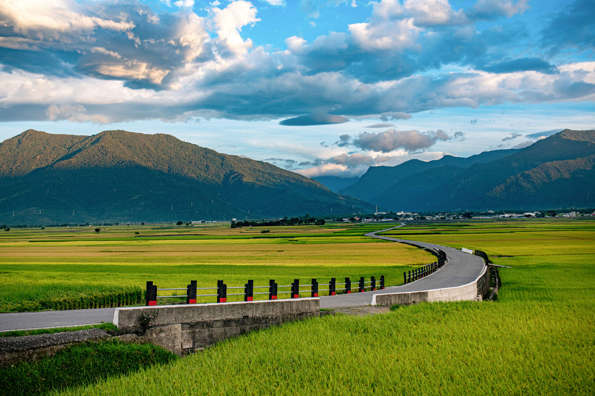

翠綠與金黃交織的天堂路，沒有一根電線桿的純淨稻鄉視野

伯朗大道位於台東縣池上鄉，正式名稱為「錦新三號道路」。這條筆直的田園小徑因為早期拍攝了「伯朗咖啡」的廣告而聞名，近年更因國際巨星金城武在長榮航空廣告中，騎著單車穿梭其間並在樹下喝茶，而引爆全球觀光熱潮。這條大道最不可思議的地方，在於兩側廣達數百公頃的稻田視野中，**完全沒有一根電線桿**。隨著四季更迭，這裡會從初春的翠綠秧苗、盛夏的翻騰綠浪，一路轉變為秋季鋪天蓋地的金黃色稻穗，被譽為台灣最純淨、最療癒的田園天堂。
與伯朗大道相交的「天堂路」，是一條宛如巨龍般蜿蜒在綠色稻海中的S型無盡小徑。大道的入口處設置了一個純白色的巨型「伯朗畫框」裝置藝術，遊客可以站在畫框中，將後方綿延到天邊的縱谷高山與稻田當作天然畫作，留下最經典的旅行紀念。
大道旁矗立著一棵挺拔的茄苳樹，正是當年金城武帥氣喝茶、講出經典台詞「I see you」的地標。雖然曾遭颱風連根拔起，但在日本與台灣樹醫的全力搶救下如今再度枝繁葉茂。不遠處還有一棵「蔡依林樹」，同樣是粉絲前來朝聖、租單車打卡的瘋狂熱點。
參觀完伯朗大道後，絕對不能錯過當地的美食。可以騎車回車站品嚐正宗的「池上木片便當」，享用香Q飽滿的在地池上米；或是前往著名的「大池豆皮店」，品嚐用柴燒豆漿手工現做的香酥金黃煎豆包與香濃豆花，為花東縱谷之旅畫下完美句點。